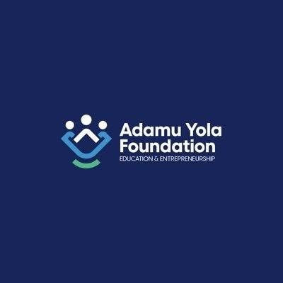

← All programmesEducationPROGRAMME / 01
Educational Empowerment
Supporting the pursuit of education through scholarships and financial assistance for indigent students at secondary and tertiary levels.
Ask about scholarships
Why it matters
Removing financial barriers so learners can keep moving forward.
Our approach is about connecting possibility with practical action, in ways that respond to real community needs.
01
Support for learners
The programme focuses on students who face financial barriers to secondary or tertiary education.
02
Opportunity, not assumptions
Scholarship eligibility and open application periods will be announced through official foundation channels.
03
A foundation for the future
Education builds pathways toward confidence, capability and long-term opportunity.